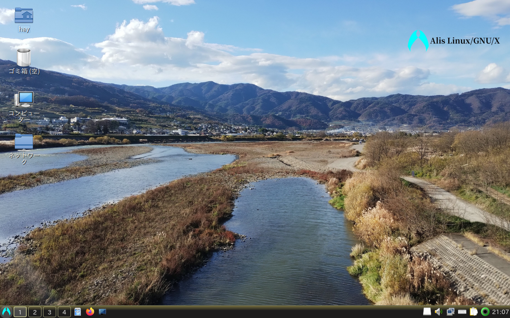

Alisは2つインストール方法があります。一つはISOをダウンロードしてメディアに焼く方法、もう一つは既存のArch系OSから移行する方法です。
どっちがいい？
| ISOをダウンロード | 既存環境から移行 |
この仮想ディスクはDVDやUSBメモリに焼いて、インストールメディアとして下さい。
尚、この仮想ディスクは新規に導入する場合のみお使い下さい。既存環境からはソフトウェアセンターから及びコマンド「nako -Syu」で更新できます。
ダウンロード、使用、共有など全て自由かつ無料ですが、代わりにサポートがありません。自己責任でご利用下さい。
※NJBのSourceForgeプロジェクト以外からダウンロードしたファイルは正規品との同一性が保障されません。安全のため、必ず公式からダウンロードするようにして下さい。
Alisのご利用にあたっては、利用規約（EULA）及び各種ライセンスの同意が必要です。
Alis Linux/GNU/X エンド ユーザー ライセンス契約
Alisは、明示・不明示を問わず、いかなる保証もない。
このディストリビューションは三条項BSDライセンスで許諾される。
加えて、これには多数の既存のソフトウェアコンポーネントが含まれており、それぞれが独自のオープンソースライセンスによって管理され、該当するライセンスの条件に基づいて利用可能になる。
お客様には、該当するソフトウェアコンポーネントのライセンス条項を確認し、遵守する責任がある。
三条項BSDライセンス
Copyright (c) 2022-2024, NAKA-MURA JUKEBOX.
Redistribution and use in source and binary forms, with or without modification, are permitted provided that the following conditions are met:
1. Redistributions of source code must retain the above copyright notice, this list of conditions and the following disclaimer.
2. Redistributions in binary form must reproduce the above copyright notice, this list of conditions and the following disclaimer in the documentation and/or other materials provided with the distribution.
3. Neither the name of the copyright holder nor the names of its contributors may be used to endorse or promote products derived from this software without specific prior written permission.
THIS SOFTWARE IS PROVIDED BY THE COPYRIGHT HOLDERS AND CONTRIBUTORS “AS IS” AND ANY EXPRESS OR IMPLIED WARRANTIES, INCLUDING, BUT NOT LIMITED TO, THE IMPLIED WARRANTIES OF MERCHANTABILITY AND FITNESS FOR A PARTICULAR PURPOSE ARE DISCLAIMED.
IN NO EVENT SHALL THE COPYRIGHT HOLDER OR CONTRIBUTORS BE LIABLE FOR ANY DIRECT, INDIRECT, INCIDENTAL, SPECIAL, EXEMPLARY, OR CONSEQUENTIAL DAMAGES (INCLUDING, BUT NOT LIMITED TO, PROCUREMENT OF SUBSTITUTE GOODS OR SERVICES; LOSS OF USE, DATA, OR PROFITS; OR BUSINESS INTERRUPTION) HOWEVER CAUSED AND ON ANY THEORY OF LIABILITY, WHETHER IN CONTRACT, STRICT LIABILITY, OR TORT (INCLUDING NEGLIGENCE OR OTHERWISE) ARISING IN ANY WAY OUT OF THE USE OF THIS SOFTWARE, EVEN IF ADVISED OF THE POSSIBILITY OF SUCH DAMAGE.
以下はNJBによる非公式な和訳
Copyright (c) 2023-2024、中村ジュークボックス。
ソース及びバイナリ形式での再配布及び使用は、変更の有無にかかわらず、下記の条件が満たされる場合に限り許可される。
1. ソースコードの再配布には、上記の著作権表示、本条件の一覧、及び下記の免責事項を含めよ。
2. バイナリ形式での再配布では、上記の著作権表示、本条件の一覧、及び下記の免責事項を、頒布物に付属の文書等の資料に含めよ。
3. 書面による特別の許可なしには、本ソフトウェアから派生した製品の宣伝または販売促進の目的での、著作権者または寄稿者の名前の使用をしてはならない。
本ソフトウェアは、著作権者及び寄稿者によって「現状のまま」提供されており、商用利用の可能性及び特定の目的に対する適合性に関する暗黙の保証も含め、またそれに限定されないいかなる保証は、明示黙示を問わず放棄される。
著作権者は事由のいかんを問わず、（代用品またはサービスの調達、使用、データ、及び利益の喪失、業務の中断を含め、また必ずしもこれらに限定されない）直接、間接、付随的、特別、懲罰的、または結果損害に対して、損害発生の原因を問わず、かつ責任の根拠が契約、厳格責任、または（過失その他の）不法行為のいずれであるかを問わず、仮にそのような損害が発生する可能性について助言を受けていたとしても、一切の責任を負わないものとする。
IPAフォントライセンス
Alisには書体「IPAフォント」が搭載されている。文字情報技術促進協議会の「IPAフォントライセンスv1.0」（https://moji.or.jp/ipafont/license/）を熟読、同意する必要がある。
………本当によく読んだ？
必ずDDモードで焼いて下さい。Windowsでは「Rufus」がお勧めです。
以下からISOをダウンロードして下さい。
LXQt質実剛健を体現したようなデスクトップ環境。軽いのにデスクトップとしての機能は一通り揃っている。 スペックの目安CPU 1GHz以上のx86_64 |
 |
LXQt Amber比較的古い（2～8世代辺り）インテルグラフィックスを搭載した機種向け。いくら新しくとも、歴史に目を背けるコトはないのだ。 スペックの目安CPU 1GHz以上のx86_64 |
|
Xfceその豪華な見た目に反して軽量。カフェでドヤれそうな見た目だけどあんまり意味はないかも。 スペックの目安CPU 1GHz以上のx86_64 |
 |
 |
Plasma多分最も近代的なフレーバー。タスクバーが浮く、ウインドウがゼリーみたいにプルプルするなどの画面効果もあるよ。 スペックの目安CPU 1GHz以上のx86_64 |
GNOMEどちらのOSにも似ていない操作体系。拡張機能でゴリゴリに加工済み。 スペックの目安CPU 1GHz以上のx86_64 |
スクショ準備中… |
| スクショ準備中… |
StudioPlasmaデスクトップを搭載した、クリエイター向けフレーバー。絵を描く、動画を作る、音声をいじる…そんな作業はもうこのOSだけでできる。 スペックの目安CPU 2GHz以上のx86_64 |